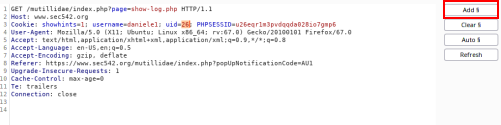

example: enumerate Authentication Bypass
Authentication Bypass on all the accounts
Once we are able to predict the value of Session Tokens of other accounts, we can try to Perform authentication bypass all the accounts!
This could be done manually via Burp Repeater, but hat would be quite tedious.
Let's automate via Burp Intruder.
1. Intercept the request with the vulnerable cookie and send it to Burp Intruder
2. Intruder → Options
3. Configure Intruder to
Grep the vulnerable cookie
Let's have Burp automatically detect when the string "Logged-In-User:" appears in the response header (meaning that authentication bypass was potentially successful).
Scroll down to "Grep - Match"
▪ Click "Clear" and click "Yes" when asked to confirm
▪ Enter "Logged-In-User:" in the field next to the "Add" button
▪ Check "Flag result items with responses matching these expressions:"
▪ Uncheck "Exclude HTTP headers"
4. Configure Intruder change the value of the vulnerable cookie with a Payload
1) Positions → Clear §
2) Select the value of the cookie to change → Add §
 3) Payloads → Payloads Sets → Payload Type → [chooseThePayload]
4) Start attack
5.Results
"Payload" column → we see which value is been used for the vulnerable cookie (uid in our case)
“Logged-In User” column→ This is the Grep that we have configured, if the the box is checked means that “Logged-In User” is contained in the response